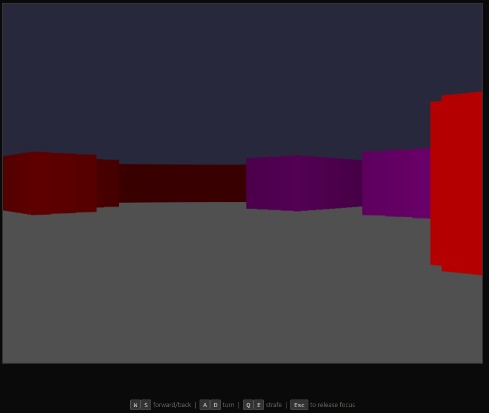
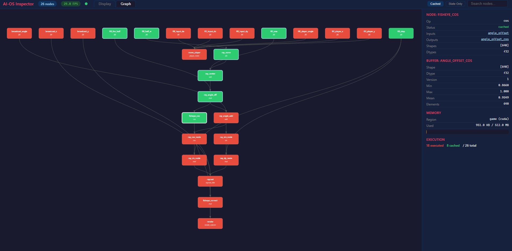
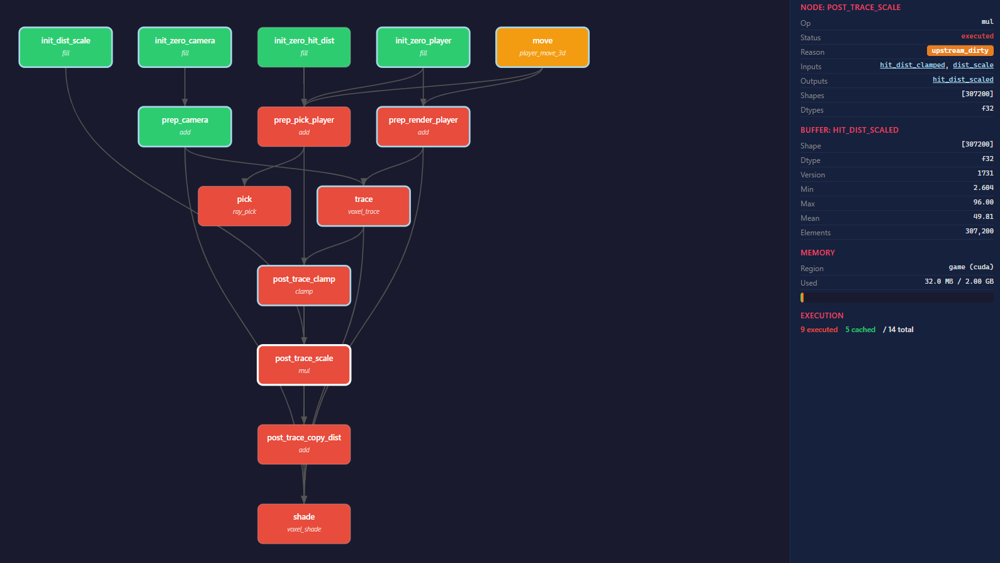

Overview
AI-OS is an operating system where the graph is the computer. It replaces the traditional process/thread/syscall model with a single abstraction: a directed acyclic graph of content-addressed compute nodes, executed by a deterministic engine with hash-based incremental rebuild. Programs are compiled to graph IR, and the runtime decides how and where to execute them. The GPU is the target computer — the CPU's job is to compile, upload, and sleep.
Why
Operating systems haven't changed in 50 years. Processes, virtual memory, preemptive scheduling — all designed for CPUs that run sequential instructions. Modern compute is massively parallel, deterministic, and data-flow driven. AI-OS starts from that reality. Every program is a DAG. Every buffer is content-addressed. Every execution is incremental. The runtime knows exactly what changed, what depends on it, and what can be skipped.
Architecture
- Ferrite Language: A declarative DSL for defining compute graphs. You describe the computation, not the execution order. 39 operations, shape inference, type validation, multi-file modules with imports/exports.
- Compiler: Lexer → parser → AST → two-pass compilation with shape inference. Constant folding, dead code elimination, op fusion.
- Graph IR: Append-only container of buffers and nodes. Immutable after freeze. Content-addressed via SHA-256.
- Rust Runtime: Entire execute loop in Rust via PyO3. CPU-side content-addressed dirty detection. CUDA Graphs collapse all kernel launches into a single ~3µs replay.
- Custom CUDA Backend: NVRTC kernels + cuBLAS matmul + raw cuMemAlloc. Fully torch-free execution path.
- Inspector: Browser-based DAG visualizer with live execution status, node details, buffer values, and memory usage. Tabbed Display/Graph view over multiplexed WebSocket.
Performance
- Small MLP (worst case, all dirty): 1.60x faster than PyTorch — 1.9ms vs 3.1ms per step, loss parity < 1e-6
- Large MLP (frozen layers): 2.19x faster than PyTorch — 3.9ms vs 8.5ms per step, content-addressed skip on unchanged subgraphs
- Doom Raycaster: 1900+ FPS on CUDA with CUDA Graphs (26-node DAG)
- Minecraft Voxel: 334 FPS at 640x480 (14-node DAG, 3D DDA through 8M voxels, 128 steps/ray)
Key Milestones
- 17+ milestones from core primitives to CUDA Graphs, GPU-resident scheduling, custom binary tensor format, and a full DSL language with modules
- 752 tests passing
- Two complete demo applications: Wolfenstein-style Doom raycaster and Minecraft voxel world